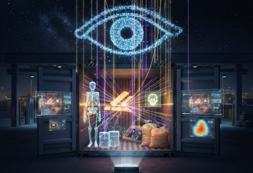

كواشف السماء: حين تصبح الجسيمات الكونية حارساً للحدود والمنافذ السيادية

كان التحدي الأكبر الذي يواجه سلطات الجمارك وأمن الموانئ عالميًا هو "العتمة" التي تفرضها الحاويات المبطنة بالرصاص أو الكتل المعدنية الضخمة. لسنوات طويلة، كانت أجهزة التفتيش التقليدية، المعتمدة على الأشعة السينية، تقف عاجزة أمام طبقات الرصاص السميكة، وهو ما استغلته شبكات التهريب الدولية لتمرير شحناتها المحظورة بعيدًا عن أعين الرقابة.
ولكن بعد أن دخلت فيزياء الجسيمات ساحة المعركة الأمنية عبر تقنية "المسح الميوني"، التي لا تعتمد على مصدر إشعاعي صناعي، بل تستعين بـ "الميونات"؛ وهي جسيمات أولية تمطرها السماء علينا باستمرار نتيجة اصطدام الأشعة الكونية بغلاف الأرض. خلافاً لكل ما عرفناه في تقنيات التفتيش السابقة، تمتلك الميونات قدرة مذهلة على اختراق المواد الأكثر كثافة على وجه الأرض.
"في واقعة موثقة في أحد الموانيء، واجهت أجهزة الأمن حاوية مسجلة كخردة معدنية ثقيلة. كانت أجهزة الـ X-ray تعطي صورًا معتمة تمامًا، وبمجرد استخدام المسح الميوني، ظهرت ملامح تشتت حاد كشفت عن سبائك يورانيوم مخبأة."
هذا الانحراف الفيزيائي لا يحدث إلا عند ارتطام الميونات بمواد ذات عدد ذري مرتفع جداً مثل الذهب أو اليورانيوم. وبالفعل، تبين أن المحرك كان مجرد غطاء خارجي لسبائك معدنية مغلفة بطبقات من الرصاص، ظناً من المهربين أن كثافة الرصاص ستحجب رؤية الأجهزة، ولم يدركوا أن الرصاص بالنسبة للميونات هو "عدسة" تكشف ما وراءها ولا تخفيه.
أمن المطارات والحدود: التفتيش دون مساس بالبشر
تجاوزت هذه التقنية حدود الموانئ البحرية لتصل إلى المطارات والمنافذ البرية الحساسة. ففي ميناء "دوفر" ببريطانيا، اعتمدت قوات الحدود كواشف الميونات لحل معضلة إنسانية وأمنية معقدة؛ وهي الكشف عن المتسللين داخل الشاحنات المزدحمة.
وبما أن الميونات إشعاع طبيعي موجود في بيئتنا اليومية، فإن استخدامها لتصوير الشاحنات لا يشكل أي خطر صحي على البشر المختبئين بداخلها، بخلاف الأشعة الصناعية الضارة. التقارير الرسمية أكدت أن هذه التقنية رفعت كفاءة الضبط بنسب قياسية، حيث تمكنت من رصد "الفراغات الحيوية" للأجسام البشرية وسط أطنان من البضائع الكثيفة بوضوح تام.
المنظور السيادي: ردع الإرهاب النووي بفيزياء الفضاء
إن القيمة الحقيقية لهذه التقنية تكمن في حماية الأمن القومي من التهديدات غير التقليدية. فالمواد المشعة، التي تشكل كابوسًا لأي جهاز أمني عالمي، تمتلك بصمة ذرية فريدة تكتشفها الميونات في ثوانٍ. في مطارات كبرى مثل "هيثرو" و"طوكيو"، أصبحت أنظمة المسح الميوني هي خط الدفاع الأخير لفحص الطرود العابرة للقارات.
التحديات والمسؤولية المهنية والقانونية
من الناحية القانونية، بدأ القضاء الدولي والوطني في عدد من الدول يعترف بمخرجات المسح الميوني كأدلة مادية لا تقبل التأويل. فالمسألة هنا ليست "تخمينات خوارزمية"، بل هي قوانين فيزيائية ثابتة. يقع على عاتق المستشارين الأمنيين ضرورة استيعاب هذا التحول؛ فالمسؤولية القانونية عن مرور شحنة مهربة لم تعد تسقط بذرعة عدم كفاءة الأجهزة.
ومن هنا أصبح الاعتماد على "كواشف السماء" يمثل نهاية عصر التهريب التقليدي. فالسماء التي تظلل حدودنا، هي ذاتها التي تمدنا اليوم بالوسيلة الأكثر دقة لحمايتها. إنها دعوة لإعادة النظر في استراتيجيات تأمين المنافذ، فالحقيقة لم تعد مدفونة تحت أطنان الرصاص، بل أصبحت مكشوفة بفضل جسيمات كونية لا تعرف التوقف.